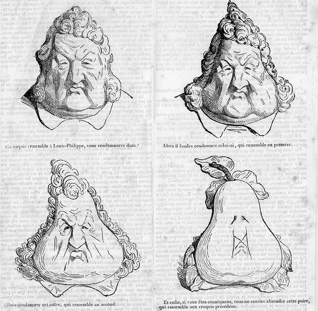
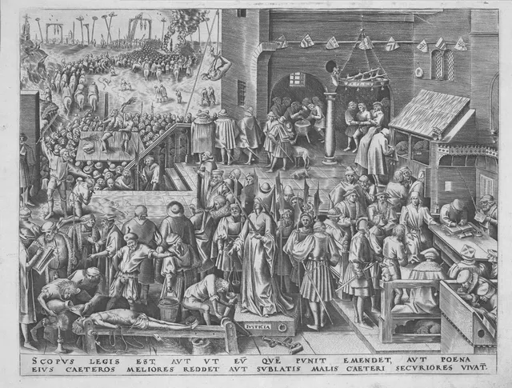
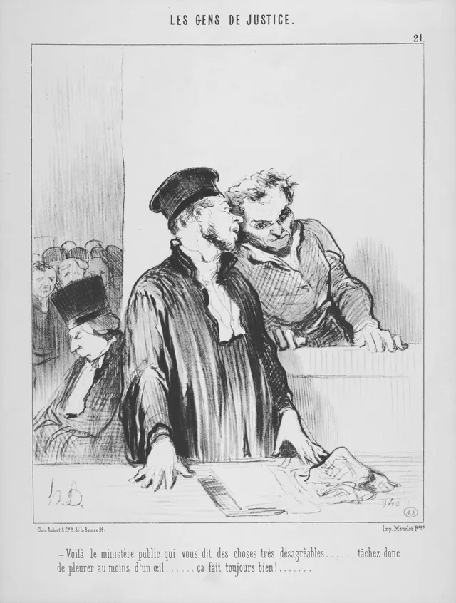

Guia das sessões interativas
Sessões 01 a 10. Os casos e simulações estão identificados nos materiais.
Sessão 01: Uma fotografia no grupo
Abrir a sessãoMateriais antes das perguntas. Vinte cartões, catorze atividades. Apoiar a leitura dos materiais e pedir uma prova para cada conclusão; não exigir escrita extensa durante os exercícios.
A duração depende do uso em turma e não está aferida.
Fontes e limites
Declaração Universal dos Direitos Humanos (Nações Unidas, 1948), preâmbulo e excertos dos artigos 1.º, 12.º e 19.º, transcrição portuguesa do UNRIC. Fotografia: Eleanor Roosevelt com a Declaração Universal, Lake Success, novembro de 1949, FDR Presidential Library & Museum, 64-165, CC BY 2.0. Fotógrafo não identificado. O caso e as propostas de resposta são construções pedagógicas.
Materiais da sessão
Uma fotografia no grupo
Que provas precisas de observar antes de decidir?
Caso inventado. Às 8h20, uma aluna é fotografada a dormir no autocarro. A imagem chega ao grupo da turma. Ninguém lhe perguntou se queria ser fotografada ou se aceitava a partilha.
Antes de decidir, observa uma fotografia, lê excertos da Declaração Universal e distingue o que sabes do que falta saber. No fim, escreves apenas três linhas em papel.
Um documento nas mãos
Observa o que as mãos seguram e a disposição do texto. A fotografia permite ler o título; não precisamos de decifrar os artigos dentro da imagem.
Tradução de trabalho do título: «A Declaração Universal dos Direitos Humanos». «Human Rights» significa «direitos humanos».
Três excertos para usar
Artigo 1.º: «Todos os seres humanos nascem livres e iguais em dignidade e em direitos.»
Artigo 12.º: «Ninguém sofrerá intromissões arbitrárias na sua vida privada».
Artigo 19.º: «Todo o indivíduo tem direito à liberdade de opinião e de expressão».
São excertos, não os artigos completos. Guarda a diferença entre dignidade, vida privada e expressão.
Fonte: Nações Unidas, Declaração Universal. Excertos.
Uma finalidade, dois meios
No preâmbulo, a Assembleia Geral apresenta a Declaração como um «ideal comum a atingir por todos os povos e todas as nações».
O texto pede que se desenvolva o respeito pelos direitos «pelo ensino e pela educação» e que se promova o seu reconhecimento e aplicação.
O alcance é universal; o ensino e a educação são meios mencionados. A formulação de um ideal não prova, por si, que esse ideal já se cumpra.
Fonte: Nações Unidas, Declaração Universal. Excertos.
Volta ao caso
A fotografia foi partilhada sem perguntar à aluna. Quem a publicou diz que foi uma brincadeira. A aluna pede que a retirem e não a voltem a partilhar.
Conheces estas posições, mas não sabes quem recebeu ou guardou a imagem. Faz os próximos exercícios individualmente. Compara os factos com os excertos; revê os retornos antes de escrever a conclusão final.
O caso é inventado. Não uses fotografias nem histórias identificáveis de colegas.
Escreve individualmente, em papel:
- A tua conclusão provisória sobre a partilha deste caso.
- Uma prova concreta do relato e uma expressão do artigo que usaste.
- Uma dúvida que ainda precisa de resposta.
Confere: separaste factos e interpretações? A prova sustenta a conclusão? Evitaste transformar este caso numa regra absoluta?
Sessão 02: A imagem dos outros
Abrir a sessãoMateriais antes das perguntas. Vinte cartões, catorze atividades. Apoiar a leitura dos materiais e pedir uma prova para cada conclusão; não exigir escrita extensa durante os exercícios.
A duração depende do uso em turma e não está aferida.
Fontes e limites
Código Civil, artigos 79.º e 81.º, sínteses conferidas na Procuradoria-Geral Regional de Lisboa. Lewis Hine, fotografia de Addie Card, 1910, Library of Congress, cph.3a20286, domínio público. A idade é informação da legenda documental. Caso, continuação, procedimento e propostas são construções pedagógicas.
Materiais da sessão
A imagem dos outros
Aceitar uma gravação é aceitar qualquer publicação?
Caso inventado. Marta aceitou ser filmada para o grupo rever um ensaio. Durante a gravação, cai. O grupo quer publicar o vídeo na conta da escola.
Marta explica: «Aceitei que o grupo visse o ensaio.» Vais observar uma fotografia, ler apoios e comparar usos da imagem. No fim, escreves três linhas em papel.
Uma imagem e a sua legenda

A legenda do arquivo identifica Addie Card e regista 12 anos. Essa idade vem da informação recolhida pelo fotógrafo, não da aparência. Observa as máquinas e distingue o que vês do que a legenda acrescenta.
Regra, exceções e limite
Artigo 79.º do Código Civil, resumo: o n.º 1 estabelece o consentimento como regra para expor ou reproduzir um retrato. O n.º 2 prevê exceções, incluindo finalidades didáticas quando o justifiquem. O n.º 3 impede usos que prejudiquem a honra, a reputação ou o simples decoro da pessoa.
Não basta invocar uma finalidade: é preciso examinar o caso e os limites.
Código Civil, artigo 79.º. Síntese pedagógica, não citação
Um procedimento antes da publicação
Procedimento proposto: identifica quem aparece; pergunta se aceita o uso previsto; mostra a versão final; regista a decisão antes de publicar.
O artigo 81.º, n.º 2, permite revogar uma limitação voluntária legal de um direito de personalidade, embora possa haver obrigação de indemnizar prejuízos causados a legítimas expectativas. Não transforma o dia do ensaio num prazo final para desistir.
Uma data de conservação do ficheiro e um contacto para pedir retirada respondem a perguntas diferentes.
Código Civil, artigo 81.º. Resumo; procedimento pedagógico
Uma proposta com dados concretos
Continuação inventada. O grupo propõe mostrar o ensaio sem a queda numa conta aberta da escola. O ficheiro da escola fica guardado até ao fim do período. O pedido indica o contacto da equipa para pedir a retirada, sem prazo para o fazer.
Marta ainda não viu a versão final nem respondeu à proposta. Não se sabe se outras pessoas guardarão cópias.
Usa estes dados nos próximos cartões; só escreves a conclusão no fim.
Escreve individualmente, em papel:
- Que decisão propões antes de publicar este vídeo?
- Que facto do caso e que parte do apoio sustentam essa decisão?
- Que dúvida ainda precisas de esclarecer?
Confere: distinguiste gravar, rever e publicar? Separaste a decisão de Marta da proposta do grupo? Não prometas apagar cópias que desconheces.
Sessão 03: Quem tem lugar?
Abrir a sessãoMateriais antes das perguntas. Vinte cartões, catorze atividades. Apoiar a leitura dos materiais e pedir uma prova para cada conclusão; não exigir escrita extensa durante os exercícios.
A duração depende do uso em turma e não está aferida.
Fontes e limites
Constituição da República Portuguesa, artigo 13.º, n.º 1, texto oficial da Assembleia da República. Caso de Rui, barreiras exemplificadas, custos em unidades, lotação, continuação e procedimento são construções pedagógicas, não dados de uma escola real. Não se usa uma imagem com direitos por confirmar nem um vídeo não visionado.
Materiais da sessão
Quem tem lugar?
Uma regra igual pode ter efeitos diferentes?
Caso inventado. A mostra da turma está marcada para o primeiro andar, sem elevador. Rui usa cadeira de rodas. A organização propõe enviar-lhe o vídeo.
Rui responde: «Quero estar na mostra e falar no debate.» Vais comparar a barreira, os apoios e os dados de uma proposta. No fim, escreves três linhas em papel.
Um princípio para examinar o caso
Constituição, artigo 13.º, n.º 1: «Todos os cidadãos têm a mesma dignidade social e são iguais perante a lei.»
O excerto enuncia um princípio; não descreve a sala da mostra nem prova que todos conseguem entrar. Os dados do caso permitem examinar a distância entre uma regra anunciada e os seus efeitos.
Constituição da República Portuguesa. Excerto
Barreiras diferentes
Exemplos inventados: degraus podem criar uma barreira no espaço; um debate apenas oral pode criar uma barreira na informação; uma atividade à noite pode criar uma barreira no horário.
No caso da mostra, sabemos que Rui não consegue subir ao primeiro andar. Não sabemos se a turma escolheu essa sala para o excluir. Descrever o efeito de uma decisão não é provar a intenção de quem decidiu.
Dados para comparar propostas
Simulação inventada: há cinco unidades disponíveis. Mudar para o rés do chão custa três; preparar apoio escrito custa uma; transmitir a mostra custa uma. A sala inferior é acessível a Rui, mas a sua lotação ainda não foi confirmada.
Procedimento proposto: descrever a barreira, ouvir quem é afetado, comparar medidas e custos, decidir explicando os limites. As unidades são dados deste exercício, não preços reais.
Uma informação nova
Continuação inventada. A organização confirma que a sala do rés do chão tem 24 lugares e há 28 inscrições. Rui confirma que consegue entrar nessa sala. Ainda não foram verificadas outras salas nem alternativas de horário.
A proposta de mudar de sala e preparar apoio escrito custa quatro das cinco unidades. Melhorar um acesso não resolve automaticamente a lotação. Usa os novos dados antes de concluir.
Escreve individualmente, em papel:
- Que medida propões com os dados disponíveis?
- Que barreira e que prova concreta justificam a medida?
- Que limite ou alternativa ainda precisa de verificação?
Confere: a proposta responde ao que Rui quer fazer? Respeita os custos conhecidos? Reconhece o problema da lotação sem inventar uma sala ou um horário?
Sessão 04: Posso dizer tudo?
Abrir a sessãoMateriais antes das perguntas. Vinte cartões, catorze atividades. Apoiar a leitura dos materiais e pedir uma prova para cada conclusão; não exigir escrita extensa durante os exercícios.
A duração depende do uso em turma e não está aferida.
Fontes e limites
Constituição da República Portuguesa, artigos 26.º e 37.º, sínteses conferidas no texto oficial da Assembleia da República. Les Poires, Le Charivari, 17 de janeiro de 1834, desenho possivelmente de Honoré Daumier a partir de Charles Philipon, gravador desconhecido, Gallica/BnF, domínio público. Caso, publicações A e B, resposta de IA, continuação e procedimento são construções pedagógicas.
Materiais da sessão
Posso dizer tudo?
Criticar e acusar pedem o mesmo tipo de prova?
Caso inventado. Uma conta de memes da turma mostra o diretor com cara de pera. Um comentário acrescenta: «O Diogo rouba na cantina.» Não apresenta provas nem identifica alguém que tenha visto o episódio.
Diogo pede que retirem a acusação. Vais observar uma caricatura, distinguir afirmações e examinar as suas fontes. No fim, escreves três linhas em papel.
Um rosto transforma-se

Observa a transformação da forma. A imagem não mostra como a pessoa retratada reagiu nem o efeito da publicação.
Expressão e responsabilidade
Para distinguir: uma opinião exprime uma apreciação; uma sátira usa transformação ou exagero para criticar; uma afirmação factual diz algo que pode ser confrontado com provas.
A Constituição protege a expressão, proíbe a censura e prevê responsabilidade por infrações no seu exercício, no artigo 37.º. O artigo 26.º protege, entre outros direitos, o bom nome e a reputação. Criticar e atribuir um facto não são a mesma operação.
Constituição, artigos 26.º e 37.º. Síntese pedagógica
Duas páginas, uma origem
Publicações inventadas: A publica a acusação sem apresentar documentos ou identificar testemunhas. B repete a mesma acusação e liga apenas para A; não acrescenta um registo próprio.
Procedimento proposto: localizar a origem, procurar a prova apresentada, verificar se outras páginas acrescentam provas independentes e só depois decidir sobre a partilha.
Contar páginas não basta: é preciso seguir as ligações e saber de onde vem a informação.
Uma repetição não resolve a dúvida
Continuação inventada. A conta pode retirar o comentário e publicar uma correção para o mesmo público. Diogo mantém o pedido. Ninguém apresentou um registo do episódio.
Uma resposta de IA repete a acusação de A, sem indicar nova fonte. Não se sabe quem guardou cópias das publicações.
Decide o tratamento da acusação com estes dados, sem confundir a caricatura com o comentário nem prometer controlar todas as cópias.
Escreve individualmente, em papel:
- Que tratamento propões para a acusação publicada?
- Que dado e que proteção sustentam a tua proposta?
- Que verificação ou limite ainda precisa de atenção?
Confere: distinguiste crítica e acusação? Não contaste repetições como fontes independentes? Reconheceste o que a correção pode e não pode resolver?
Sessão 05: Quem guarda os meus dados?
Abrir a sessãoMateriais antes das perguntas. Vinte cartões, catorze atividades. Apoiar a leitura dos materiais e pedir uma prova para cada conclusão; não exigir escrita extensa durante os exercícios.
A duração depende do uso em turma e não está aferida.
Fontes e limites
Apoios com fontes identificadas nos cartões. Casos, documentos, dados numéricos e procedimentos são construções pedagógicas explicitamente inventadas. Sem vídeos não visionados. Fontes e limites indicados nos materiais de leitura.
Materiais da sessão
Quem guarda os meus dados?
Caso inventado. Depois de desaparecerem telemóveis, propõem-se câmaras nas salas comuns. Entretanto, a escola prepara uma visita com almoço e transporte em autocarro.
Que dados são necessários e quem precisa deles? Examina a finalidade, os acessos e os limites legais. As decisões da simulação não autorizam uma recolha real. No fim, escreve três linhas no caderno.
Um formulário para examinar
Formulário inventado da visita: turma; contacto de emergência; alergias relevantes para o almoço; profissão dos pais.
As finalidades declaradas são organizar o transporte, preparar a refeição e contactar alguém numa emergência. Não se fará qualquer estudo sobre profissões.
Analisa os campos sem escrever dados teus. Dizer para que serve uma recolha ajuda a avaliar a necessidade; não dispensa verificar as restantes condições legais.
O que pode a videovigilância abranger?
A Lei 58/2019 limita a videovigilância nas escolas aos perímetros externos, acessos e espaços com bens especialmente protegidos, como laboratórios. Isso não autoriza filmar salas de aula comuns.
Onde a videovigilância é admitida, a captação de som é proibida, exceto com as instalações encerradas ou autorização prévia da CNPD. Estas regras delimitam o que é permitido; não provam que uma câmara resolva os furtos.
Lei 58/2019, artigo 19.º. Síntese pedagógica.
Finalidade, acesso e conservação
Procedimento proposto: define a finalidade; elimina campos desnecessários; determina quem precisa de acesso; informa sobre o uso e o prazo; recolhe apenas depois de verificar as condições aplicáveis.
O prazo de conservação pode estar fixado na lei. Na falta dele, depende do necessário à finalidade, com situações de conservação previstas legalmente. Cessada a finalidade, a lei prevê destruição ou anonimização. Não vale guardar indefinidamente «para o caso de servir».
Lei 58/2019, artigo 21.º. Síntese pedagógica.
Uma pasta aberta a mais pessoas
Continuação inventada. A organização põe a lista de alergias numa pasta acessível à turma inteira. A refeição é preparada por uma equipa que necessita dessa informação; os restantes colegas não a usam.
Uma gravação de entrevista, feita para o projeto, chegou ao prazo combinado. Nesta simulação não há outra finalidade nem obrigação de conservação. Compara as duas situações; não suponhas que partilhar mais é sempre ajudar.
Escreve individualmente no caderno, uma linha para cada ponto:
- Que alteração farias ao formulário ou ao acesso à pasta?
- Que finalidade e que dado do caso justificam a alteração?
- Que condição verificarias antes de uma recolha real?
Usa os dados apresentados. Se falta informação, identifica-a em vez de a inventares.
Sessão 06: Uma regra para quem perde
Abrir a sessãoMateriais antes das perguntas. Vinte cartões, catorze atividades. Apoiar a leitura dos materiais e pedir uma prova para cada conclusão; não exigir escrita extensa durante os exercícios.
A duração depende do uso em turma e não está aferida.
Fontes e limites
Apoios com fontes identificadas nos cartões. Casos, documentos, dados numéricos e procedimentos são construções pedagógicas explicitamente inventadas. Sem vídeos não visionados. Fontes e limites indicados nos materiais de leitura.
Materiais da sessão
Uma regra para quem perde
Caso inventado. Há seis turnos futuros de filmagem para três grupos. A tem o guião pronto; B termina-o amanhã; C tem o guião pronto, mas perdeu um turno anterior porque o equipamento não chegou.
O delegado pertence a A e propõe prioridade ao guião pronto. Como comparar critérios sem transformar o interesse de quem decide numa vantagem? Só escreves no fim.
Olhar para a Justiça

Observa a figura central e o que a rodeia. A imagem permite identificar elementos, mas não prova que todos os castigos representados sejam justos.
Três propostas comparáveis
Propostas inventadas para os seis turnos futuros:
- Distribuição igual: A recebe 2, B recebe 2, C recebe 2.
- Compensação da perda anterior: A recebe 1, B recebe 2, C recebe 3.
- Prioridade ao guião pronto: A recebe 3, B recebe 0, C recebe 3.
São escolhas diferentes, não soluções universalmente certas. Todas distribuem seis turnos; compara os efeitos e os motivos. O turno anterior perdido por C não faz parte destes seis.
Testar uma regra e afastar um conflito
Procedimento proposto: compara os critérios; identifica quem é afetado; ouve as objeções; revê a regra se a razão justificar a mudança. Explicar uma regra não basta para a tornar justa.
No procedimento administrativo, o CPA prevê impedimentos quando quem intervém tem interesse próprio ou certos vínculos familiares. Nesta simulação, o delegado apresenta a proposta, mas não decide sozinho a distribuição. É uma regra pedagógica de imparcialidade, não um parecer jurídico sobre a turma.
CPA, artigos 9.º e 69.º. Síntese pedagógica.
Uma objeção muda a proposta
Continuação inventada. B explica que consegue usar dois turnos depois de terminar o guião. A e C também conseguem filmar nesses momentos. A proposta revista reserva dois turnos a cada grupo.
C aceita provisoriamente, mas pergunta como será tratada a perda anterior. A nova proposta não responde a essa pergunta. O delegado deixa de decidir sozinho. Avalia o que melhorou e o que continua por resolver.
Escreve individualmente no caderno, uma linha para cada ponto:
- Que regra escolherias para os seis turnos futuros?
- Que efeito e que objeção tens de considerar?
- Que ponto continua por resolver ou pode levar-te a rever?
Usa os dados apresentados. Se falta informação, identifica-a em vez de a inventares.
Sessão 07: Nove contra dois
Abrir a sessãoMateriais antes das perguntas. Vinte cartões, catorze atividades. Apoiar a leitura dos materiais e pedir uma prova para cada conclusão; não exigir escrita extensa durante os exercícios.
A duração depende do uso em turma e não está aferida.
Fontes e limites
Apoios com fontes identificadas nos cartões. Casos, documentos, dados numéricos e procedimentos são construções pedagógicas explicitamente inventadas. Sem vídeos não visionados. Fontes e limites indicados nos materiais de leitura.
Materiais da sessão
Nove contra dois
Caso inventado. Circula um vídeo montado para ridicularizar uma colega. Uma captura descrita no caso mostra o nome de Tomás junto do vídeo. Nove pessoas atribuem-lhe a autoria; duas pedem mais elementos.
O que podes concluir sem transformar uma suspeita em certeza? Lê os documentos inventados, separa observações de inferências e escreve apenas três linhas no fim.
Uma cena e uma legenda

A legenda da obra aconselha o acusado a chorar para causar boa impressão. É um resumo da legenda, que não aparece neste recorte; não é uma conclusão sobre uma pessoa real.
Três documentos da simulação
A, descrição da captura: às 10h05, o nome «Tomás» aparece junto do vídeo. Não há informação sobre o aparelho usado.
B, declaração de Tomás: «Deixei o telemóvel na mesa entre as 10h00 e as 10h10. Não publiquei o vídeo.»
C, declaração de Inês: «Vi uma mão pegar no telemóvel. Não vi o rosto nem o ecrã.»
São documentos inventados. Uma declaração é informação a examinar; não prova automaticamente que tudo ocorreu como foi contado.
Ouvir e rever
Na simulação, segue este procedimento: lê cada documento; distingue o que relata do que inferes; procura contradições ou lacunas; formula uma conclusão provisória; revê-a se surgir informação relevante.
A Constituição garante audiência e defesa nos processos sancionatórios. No processo criminal, o arguido presume-se inocente até à condenação definitiva. Esta atividade não é um julgamento real nem decide uma sanção escolar.
Constituição, artigo 32.º, n.ºs 2 e 10. Síntese pedagógica.
Uma informação nova, ainda limitada
Continuação inventada. Surge uma mensagem de Leonor: «Usei o telemóvel de Tomás às 10h03 para consultar a hora.» O relato ainda não foi confrontado com outros registos.
A mensagem não menciona a publicação. A captura continua a indicar 10h05. A equipa pode pedir que cesse a circulação do vídeo e procurar informação adicional, sem expor mais a colega.
Analisa o alcance da mensagem; não a transformes numa confissão.
Escreve individualmente no caderno, uma linha para cada ponto:
- Que conclusão provisória podes defender sobre a autoria?
- Que documento sustenta essa conclusão e até onde chega?
- Que informação procurarias a seguir?
Usa os dados apresentados. Se falta informação, identifica-a em vez de a inventares.
Sessão 08: Quem decide o quê?
Abrir a sessãoMateriais antes das perguntas. Vinte cartões, catorze atividades. Apoiar a leitura dos materiais e pedir uma prova para cada conclusão; não exigir escrita extensa durante os exercícios.
A duração depende do uso em turma e não está aferida.
Fontes e limites
Apoios com fontes identificadas nos cartões. Casos, documentos, dados numéricos e procedimentos são construções pedagógicas explicitamente inventadas. Sem vídeos não visionados. Fontes e limites indicados nos materiais de leitura.
Materiais da sessão
Quem decide o quê?
Caso inventado. Um aviso municipal anuncia a retirada da passadeira junto da escola. A turma quer pedir que a decisão seja revista, mas ainda não conhece o serviço responsável nem o estudo que a sustenta.
Que informação transforma um protesto num pedido que se pode examinar? Observa, compara e decide. Só escreves no fim, em três linhas.
O que uma fotografia permite saber

A imagem regista uma concentração de pessoas. A legenda identifica o acontecimento; a fotografia não transcreve o pedido apresentado.
Pedir, fundamentar e receber resposta
A Lei 43/90 permite apresentar petições por escrito e assinadas. A entidade destinatária deve examiná-las e comunicar a decisão. Se se considerar incompetente, remete o pedido à entidade competente e informa quem o apresentou.
Explica o que pedes e porquê. Não precisas de citar o número de um artigo para apresentar uma petição. Uma petição pode ter um só subscritor.
Lei 43/90, artigos 4.º, 8.º, 9.º e 13.º. Síntese pedagógica.
Confirmar antes de enviar
Procedimento proposto: identifica a entidade competente; formula o pedido; junta as razões e os registos; assina e entrega; guarda o comprovativo para acompanhar a resposta.
Uma reclamação pede a revisão a quem praticou o ato ou ao seu superior. O Provedor aprecia queixas e recomenda, sem decidir o caso. A sua intervenção é independente dos outros meios de defesa.
Lei 43/90, artigo 2.º. Síntese pedagógica.
Constituição, artigo 23.º. Síntese pedagógica.
Um registo que pode ser conferido
Continuação inventada. O aviso identifica o Serviço Municipal de Mobilidade. Um registo da turma indica 140 travessias junto do portão, entre as 8h00 e as 8h30 de terça-feira. Conta travessias, não pessoas diferentes.
Não há contagens noutros dias nem estudo sobre segurança. A turma pretende anexar o registo e pedir os fundamentos da mudança. Estes números são dados da simulação, não observações de uma escola real.
Escreve individualmente no caderno, uma linha para cada ponto:
- A quem diriges o pedido desta simulação?
- Que pedido fazes e que registo juntas?
- Que informação ainda falta para avaliar a mudança?
Usa os dados apresentados. Se falta informação, identifica-a em vez de a inventares.
Sessão 09: Muitas vozes, uma escola
Abrir a sessãoMateriais antes das perguntas. Vinte cartões, catorze atividades. Apoiar a leitura dos materiais e pedir uma prova para cada conclusão; não exigir escrita extensa durante os exercícios.
A duração depende do uso em turma e não está aferida.
Fontes e limites
Apoios com fontes identificadas nos cartões. Casos, documentos, dados numéricos e procedimentos são construções pedagógicas explicitamente inventadas. Sem vídeos não visionados. Fontes e limites indicados nos materiais de leitura.
Materiais da sessão
Muitas vozes, uma escola
Caso inventado. Nos intervalos ouvem-se várias línguas. A direção propõe que se fale apenas português, para facilitar conversas entre todos. Uma aluna explica que costuma falar com a irmã na língua que usam em casa.
Como avaliar os efeitos sem adivinhar intenções nem tratar todas as pessoas como iguais? Lê as situações e escreve apenas três linhas no fim.
Dois relatos não são a escola inteira
Relatos inventados:
Ana: «Quero participar nas conversas, mas nem sempre percebo a língua usada.»
Lina: «No intervalo falo com a minha irmã na nossa língua. Também converso em português com outros colegas.»
Os relatos mostram duas experiências. Não demonstram que todos os alunos pensam o mesmo nem que falar outra língua seja uma tentativa de excluir alguém.
Direitos e efeitos de uma regra
A Constituição proíbe prejudicar alguém em razão da língua ou religião. A mesma formulação de uma regra pode afetar pessoas de maneiras diferentes.
No caso, é preciso examinar a dificuldade de Ana em participar e o uso que Lina faz da língua com a irmã. Ouvir uma necessidade não significa aceitar automaticamente qualquer solução. Explicar uma regra também não basta para a tornar justa.
Constituição, artigo 13.º, n.º 2. Síntese pedagógica.
Responder a uma generalização
Exemplo inventado: «Quem fala outra língua não quer participar.» A frase atribui a mesma intenção a um grupo inteiro. O relato de Lina mostra que falar outra língua e conversar em português podem coexistir.
Procedimento proposto: identifica a generalização; pergunta em que dados assenta; compara esses dados com casos concretos; reformula sem atribuir a todos a mesma intenção. A comparação pode limitar uma afirmação sem provar o contrário sobre todo o grupo.
Uma festa com condições por conhecer
Continuação inventada. A turma prepara uma festa. Alguns colegas dizem que estarão em jejum nesse dia. Ainda não explicaram de que condições precisam para participar; ninguém tem de identificar a sua religião para descrever uma necessidade.
A organização pode perguntar pelas condições de participação e comparar horários ou atividades. Não sabe ainda se mudar a hora resolve o problema. O caso não dá autorização para registar crenças pessoais.
Escreve individualmente no caderno, uma linha para cada ponto:
- Que efeito da regra linguística ou da proposta de festa identificas?
- Que relato ou dado sustenta a tua leitura?
- Que pergunta farias antes de decidir uma alteração?
Usa os dados apresentados. Se falta informação, identifica-a em vez de a inventares.
Sessão 10: O que conseguimos defender?
Abrir a sessãoMateriais antes das perguntas. Vinte cartões, catorze atividades. Apoiar a leitura dos materiais e pedir uma prova para cada conclusão; não exigir escrita extensa durante os exercícios.
A duração depende do uso em turma e não está aferida.
Fontes e limites
Apoios com fontes identificadas nos cartões. Casos, documentos, dados numéricos e procedimentos são construções pedagógicas explicitamente inventadas. Sem vídeos não visionados. Fontes e limites indicados nos materiais de leitura.
Materiais da sessão
O que conseguimos defender?
Caso inventado. Numa apresentação, Joana afirma que a biblioteca deve abrir mais cedo. Alguém pergunta: «Que dados sustentam essa proposta?»
Defender uma resposta exige distinguir o que sabes, a origem e os limites. Vais examinar um pequeno conjunto de documentos inventados. O percurso não exige uma apresentação anterior nem um instrumento de avaliação. Só escreves três linhas no fim.
Um pedido e dois documentos
A: o aviso da biblioteca indica abertura às 9h00.
B: num inquérito inventado, 12 dos 20 alunos que responderam dizem chegar antes das 9h00. Não se perguntou se usariam a biblioteca.
Proposta de Joana: experimentar abrir mais cedo, se houver condições.
O horário é informação do aviso; as chegadas são respostas ao inquérito; a experiência é uma proposta. Nenhum documento informa sobre os custos.
Distinguir prova, proposta e limite
Uma fonte sustenta apenas aquilo que permite verificar. As respostas de 20 pessoas não representam automaticamente toda a escola. Chegar cedo não prova vontade de usar a biblioteca.
Uma objeção pode revelar uma pergunta ainda sem resposta. Investigar também pode confirmar a conclusão inicial; não é obrigatório mudar de opinião. O importante é mostrar que provas foram examinadas e que limites permanecem.
Estas são orientações de análise aplicadas aos documentos da simulação.
Responder a uma objeção
Procedimento proposto: escuta a objeção; identifica o dado que está a ser pedido; compara-o com as fontes disponíveis; responde com a prova e o limite; procura informação adicional se necessário.
Objeção inventada: «Chegar antes das nove não quer dizer querer ir à biblioteca.» Esta objeção questiona uma passagem entre dois factos, não prova que ninguém usaria a biblioteca.
Uma resposta mais informada
Continuação inventada. Oito dos 12 respondentes que chegam cedo dizem agora que usariam a biblioteca. A responsável informa que a abertura antecipada depende de haver uma pessoa disponível para acompanhar o espaço.
A disponibilidade dessa pessoa ainda não está confirmada. Não há dados dos restantes alunos. A proposta passa a ser uma experiência limitada, sujeita a essa confirmação e a um registo de utilização.
Escreve individualmente no caderno, uma linha para cada ponto:
- Que resposta provisória dás à proposta de Joana?
- Que documento a sustenta e que objeção consideraste?
- Que condição ou informação ainda tens de verificar?
Usa os dados apresentados. Se falta informação, identifica-a em vez de a inventares.